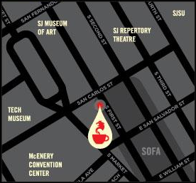

About Caffe Frascati
Caffe Frascati is like a little taste of Italy right in the heart of downtown San Jose. We want to bring you the best cappuccino outside of Rome and the tasty panini you can enjoy in the villages that dot the Umbrian countryside. And, to make things better, we're just around the corner. Come and sip one of our famous cappuccinos, try one of our tasty paninis, experience some live music, or just enjoy happy hour with friends after a long day at work. Cappuccino, Musica, Birra e Vino. BRAVO!
Our Location
315 South First Street
San Jose, CA 95113
(408) 287 – 0400
Our Hours
Monday – Thursday: 7 am – 10 pm
Friday: 7 am – midnight
Saturday: 8 am – midnight
Sunday: 8 am – 9 pm